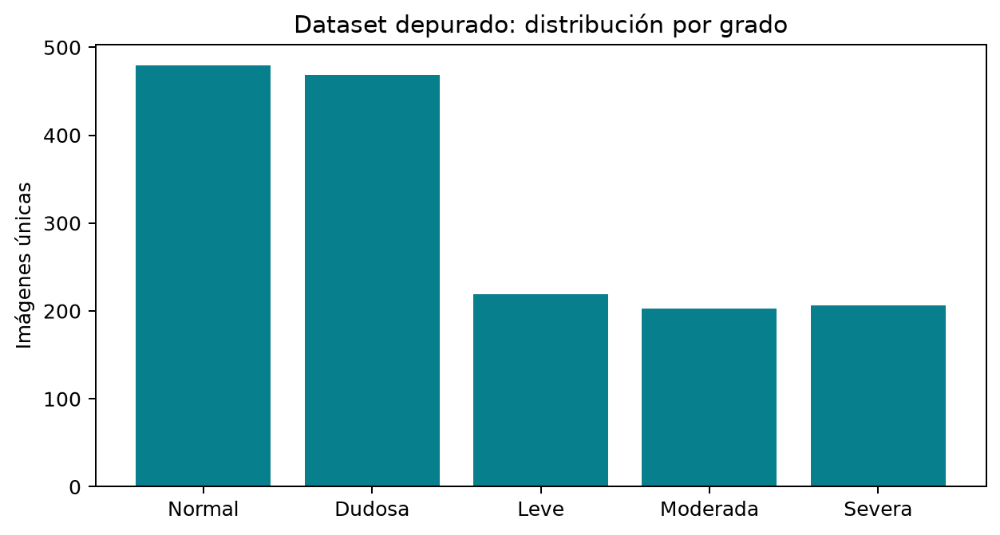
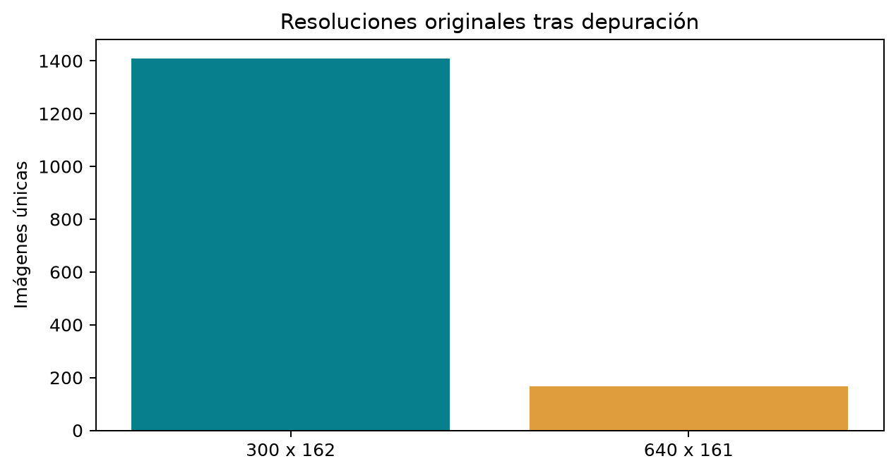
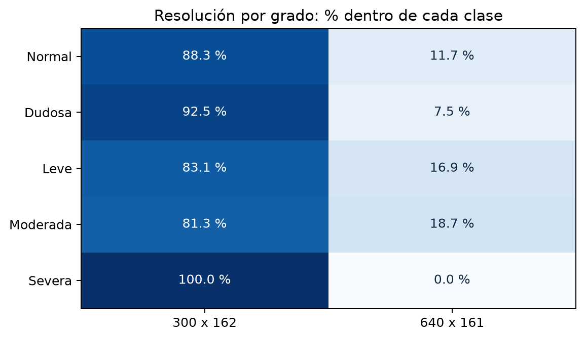
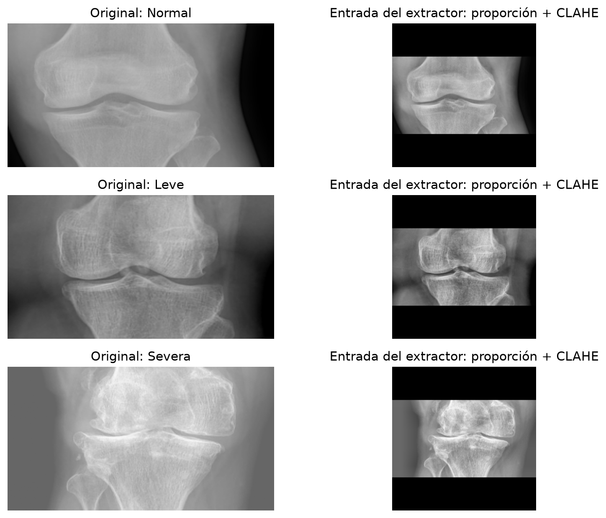
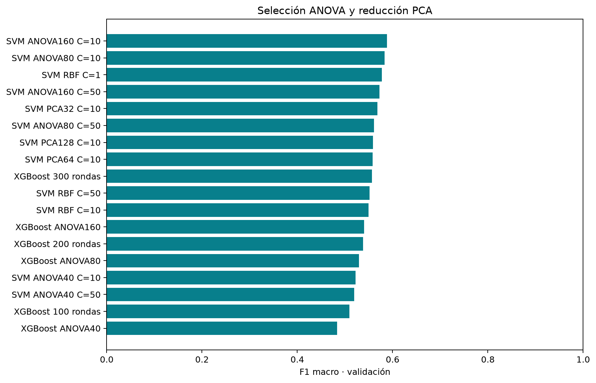
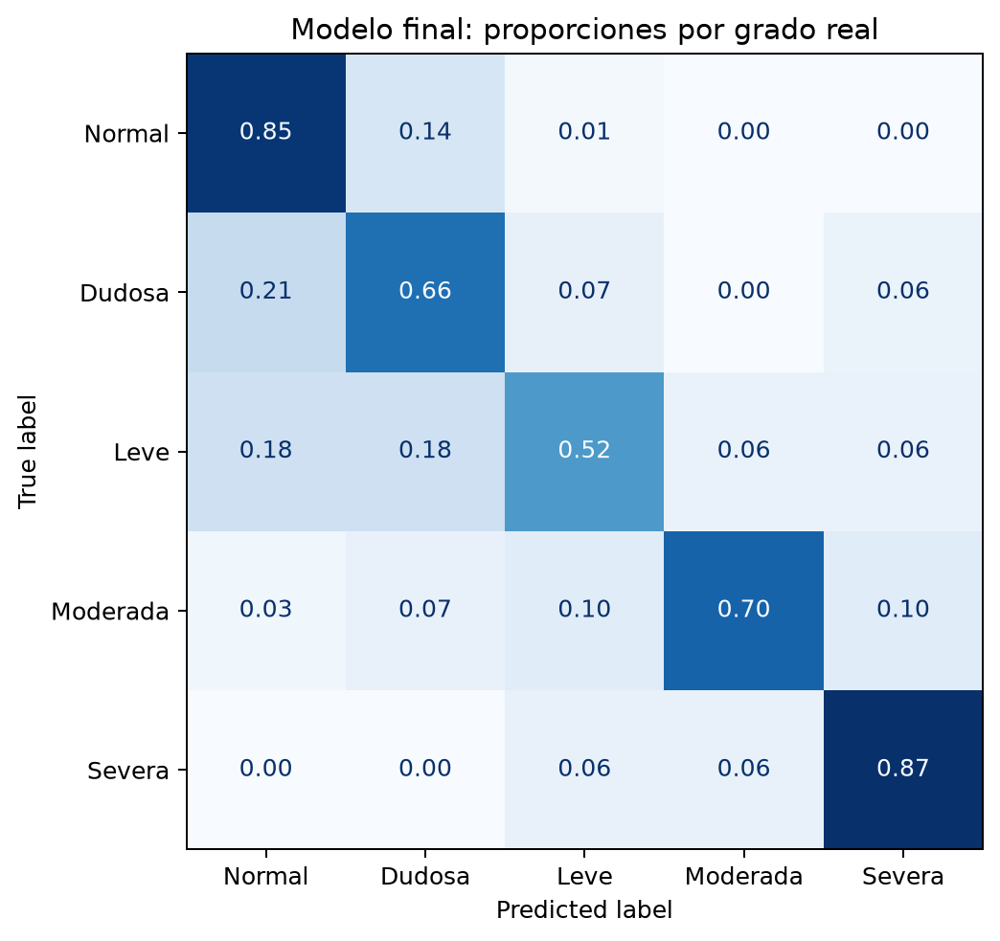
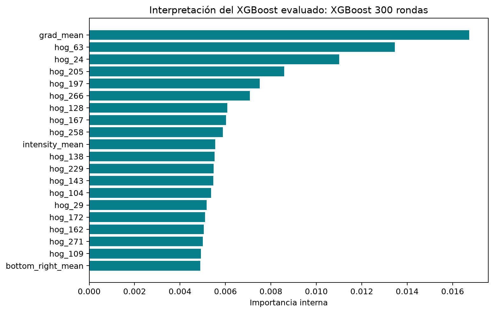

PROYECTO FINAL · INGENIERÍA ELECTRÓNICA
Artrosis de rodilla con Machine Learning
Cinco grados y una evaluación reconstruida después de auditar duplicados.
Facultad de Ingeniería · Universidad Nacional de Asunción
Machine Learning 1 (23433) · Semestre 2026
Jorge Javier Palma Martínez
jpalma@fiuna.edu.py · GitHub: J-Palma
Prototipo académico. No usar para diagnóstico ni decisiones clínicas. Versión: deduplicated-v2-2026-11-22.
01 · PROBLEMA
Clasificar cinco grados de severidad
La entrada es una radiografía y la etiqueta es Normal, Dudosa, Leve, Moderada o Severa (0–4). Son categorías ordenadas; los clasificadores entrenan como multiclase nominal.
Justificación
Se estudia si combinaciones aprendidas de intensidad, bordes y textura distinguen grados en imágenes de diferente contraste y formato. El experimento compara métodos; no demuestra superioridad frente a especialistas.
Objetivo general
Desarrollar un pipeline reproducible de clasificación de artrosis.
Objetivos específicos
- Auditar calidad, duplicados y etiquetas.
- Extraer descriptores conservando la geometría.
- Comparar selección ANOVA, PCA y modelos clásicos con validación.
- Evaluar errores y presentar una demo, API y dashboard.
02 · AUDITORÍA Y EDA
1576 imágenes únicas elegibles
Fuente: Annotated Dataset for Knee Arthritis Detection, Kaggle. De 1650 originales se excluyeron 6 imágenes de 3 grupos con etiquetas contradictorias y 68 copias exactas. Se conservó una imagen por hash de píxeles.
Particiones: 1103 train, 236 validación y 237 test. No comparten hashes idénticos. Se mantienen originales e inventario de inclusión.
Corrección del protocolo: las cifras anteriores sobre 1.650 imágenes se reemplazaron: había 30 grupos duplicados entre particiones. Sin IDs de pacientes, todavía pueden existir recortes relacionados o duplicados aproximados.



| Grado | Imágenes únicas |
|---|---|
| Normal | 479 |
| Dudosa | 469 |
| Leve | 219 |
| Moderada | 203 |
| Severa | 206 |
Faltantes: extracción detenida ante imágenes ilegibles; no se imputan píxeles. Atípicos: no se eliminan por severidad o resolución; sin auditoría clínica. Codificación: etiquetas 0–4 y descriptores numéricos sin OneHotEncoder. Escalado: StandardScaler para modelos lineales, SVM, PCA y SVD; árboles sin ese escalado.
03 · METODOLOGÍA
De la radiografía al modelo final
Escala de grises, separación por la mitad de imágenes de al menos 500 píxeles de ancho, ajuste proporcional a 256 × 256 y CLAHE (clip limit 1,5). La regla de anchura es específica del dataset; no detecta anatomía. En estudios bilaterales se promedian descriptores: la predicción corresponde al estudio, no a cada rodilla.

Características y selección
320 descriptores: 5 de intensidad, 3 de gradientes/Laplaciano, 16 bins de histograma, 8 estadísticas espaciales y 288 HOG. Se comparó ANOVA (40, 80 y 160 variables), PCA (32, 64 y 128 componentes) y subespacios SVD sobre píxeles 64 × 64. El percentil 25 es constante en train por el fondo; ANOVA no lo favorece.
Elegido: SVM ANOVA160 C=10 con F1 macro de validación 0.5881. El modelo final conserva 160 variables. PCA se evaluó, pero no se eligió.

Evaluación y fuga de datos
70/15/15 estratificado por clase y resolución, semilla 42. Selección de parámetros, representación y familia por F1 macro de validación. Luego reentrenamiento con train + validation; decisión guardada antes de calcular resultados de test.
Curvas con StratifiedKFold de 3 folds dentro de train. Cada fold reajusta selector y escalador. Son diagnósticas posteriores a la búsqueda, no validación anidada ni externa. La auditoría elimina duplicados exactos; sin IDs no garantiza separación por paciente.
Modelos y barrido
Logística L2 (C=0,001 a 10), SVM RBF (C=1, 10, 50), Random Forest (100–300 árboles; hoja 1 o 2), XGBoost (100–300 rondas, profundidad 4), SVD (k=5, 10, 20, 30, 50) y Dummy mayoritaria como referencia. XGBoost crea cinco árboles por ronda: 300 rondas son 1.500 árboles.
Métricas
F1 macro pondera por igual cada grado; balanced accuracy promedia recalls. Accuracy mide aciertos totales. Precisión/recall por clase, ROC One-vs-Rest y kappa cuadrático complementan el análisis ordinal.
04 · RESULTADOS
Decisión congelada antes del test
SVM ANOVA160 C=10
Accuracy test 73.00% · Balanced acc. 71.85%
Test reservado: 237 imágenes. Se retiene por familia su mejor configuración de validación. Kappa cuadrático final: 0.8485.
| Modelo | F1 val. | Accuracy test | Balanced acc. | F1 test |
|---|---|---|---|---|
| SVM ANOVA160 C=10 | 0.5881 | 73.00% | 71.85% | 0.7207 |
| XGBoost 300 rondas | 0.5565 | 71.73% | 68.34% | 0.6847 |
| Random Forest n=300 hoja=2 | 0.5438 | 67.09% | 63.12% | 0.6436 |
| Logística C=0.1 | 0.5630 | 65.40% | 64.01% | 0.6267 |
| SVD k=10 | 0.4931 | 59.07% | 56.59% | 0.5645 |
| Dummy mayoritaria | 0.0925 | 30.80% | 20.00% | 0.0942 |


| Grado | Precisión | Recall | F1 | N test |
|---|---|---|---|---|
| Normal | 0.738 | 0.849 | 0.790 | 73 |
| Dudosa | 0.719 | 0.657 | 0.687 | 70 |
| Leve | 0.607 | 0.515 | 0.557 | 33 |
| Moderada | 0.840 | 0.700 | 0.764 | 30 |
| Severa | 0.750 | 0.871 | 0.806 | 31 |

Discusión
SVM ANOVA160 C=10: F1 train 0.995 frente a CV 0.566. La brecha es compatible con sobreajuste; la curva usa menos ejemplos de ajuste que el modelo final reentrenado.
XGBoost 300 rondas: F1 train 1.000 frente a CV 0.553. La brecha es compatible con sobreajuste; la curva usa menos ejemplos de ajuste que el modelo final reentrenado.
El modelo final encabeza esta comparación. No se aisló una causa de superioridad: la combinación de selección y SVM fue la que obtuvo el mayor F1 de validación entre los candidatos predefinidos. El tamaño de la cohorte y las diferencias entre validación y test impiden generalizar ese orden a otros datasets.

05 · DEMO INTERACTIVA
Explorar predicciones del test
Elegí una muestra para ver su etiqueta, decisión y puntuaciones. Son resultados precalculados con el pipeline publicado, no inferencia sobre nuevas imágenes en el navegador.
SVM decide con su regla de clasificación. El orden de probabilidades puede diferir; no son certezas clínicas.
Probar imágenes nuevas
El repositorio incluye un dashboard Streamlit con inferencia local y modo API HTTP. FastAPI expone POST /predict. El README describe cómo ejecutar ambos servicios; no es necesario desplegar Python para navegar por este portal.
06 · CONCLUSIONES
Alcance y próximos pasos
Tras auditar duplicados y etiquetas, validación eligió SVM con 160 descriptores. F1 macro de test 0.7207. Los resultados antiguos quedan reemplazados; no son comparables por el cambio de muestra y partición.
Limitaciones
Sin IDs de paciente, cohorte externa ni revisión especializada. Pueden existir recortes relacionados; formato y presencia de dos rodillas pueden sesgar el modelo. El promedio bilateral pierde lateralidad. Pérdida nominal para una etiqueta ordinal; puntuaciones sin calibración clínica.
Trabajo futuro
- Separación por paciente y auditoría de similitud aproximada.
- Validación externa y revisión de etiquetas con especialistas.
- Regularización, clasificación ordinal y calibración con datos separados.
- Comparación con extractores preentrenados bajo protocolo congelado.
07 · ENTREGA
Código y documentos reproducibles
Inventario y particiones con rutas relativas y hashes. El dataset completo se descarga desde Kaggle. La API y su Dockerfile acompañan el dashboard; el portal consume archivos estáticos.